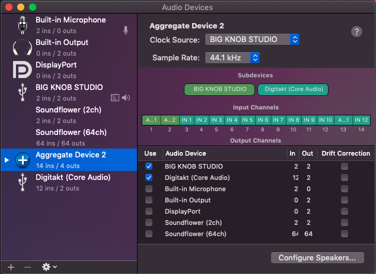
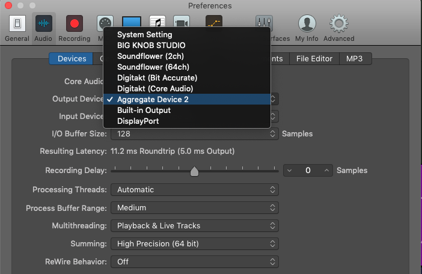
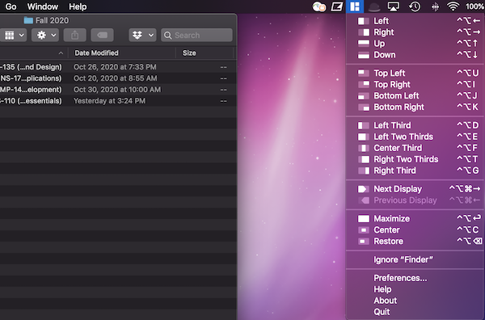
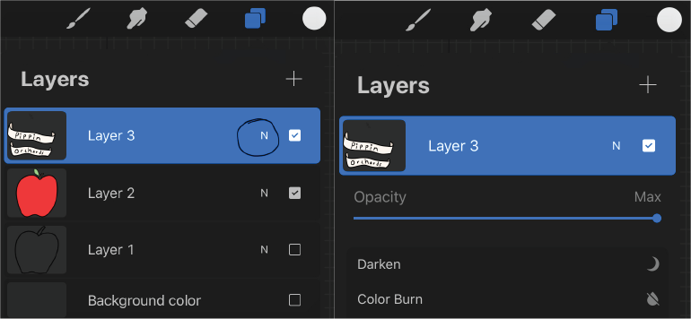

Blog
March 10, 2021 | VPN and Airdrop Issues
Recently while connected to a VPN on my MacBook, I tried airdropping a procreate file from my iPad and it couldn’t find my computer. I quickly pulled out my iPhone to test if I could airdrop to my computer from my phone. As you might expect, it didn’t work either. I then tried airdropping from my phone to my tablet and was successful. After pondering the connection issue with my computer for a few minutes, it occurred to me that my VPN connection could be causing the issue. I disconnected my computer from the VPN, and just as my hypothesis predicted; airdrop was once again working.
In hindsight this makes perfect sense as my computer was connected to a different network than my tablet. This presents a slight conundrum when using a VPN to work remotely. You either have to airdrop your files in advance or disconnect from the VPN temporarily to send them.
As a takeaway from this experience I would advise anyone who frequently uses a VPN and is suddenly having airdrop issues to double check they aren’t currently using their VPN.
January 15, 2021 | Aggregate Devices – Mac OS
As someone with a passion for music creation I spend a lot of time working with external audio devices and interfaces. In this blog post I am going to explain the process of setting up what Mac OS calls an aggregate device.
First off, why do we want to set up an aggregate device? The answer is quite simple. An aggregate device is useful when you have multiple audio interface peripherals attached to your computer at once and you want to use them together. For example, if I have two interfaces that each have 2 inputs and 2 outputs, I can combine them into one interface that has 4 inputs and 4 outputs. This opens up the possibility of using them simultaneously to record audio, or perform other tasks in an application like a DAW.
So where do we start? First we need to go to audio midi setup utility. We can get to the audio midi setup utility a few ways. The simplest being a spotlight or Alfred search. The long way is to open finder, click go on the top menu bar, then click utilities. Once in utilities, select audio midi setup. Now that we are in the audio midi setup page we can see a list of our audio devices. Hit the + symbol in the bottom left corner of the window to create a new aggregate device. From here, select the audio devices you want to use in this aggregate device. The GUI will display the current inputs and outputs you have selected for this device. If you desire, you can also rename your aggregate device so that it has a more meaningful name.

Now that our aggregate device is created, we can open up our DAW or audio program of choice. For this example I will be using Logic Pro X. In your Daw, go to the audio preferences menu and change the input and output device to your newly created aggregate device. That’s it! You are now ready to use your aggregate device!

December 19, 2020 | Window Management With Magnet
Often while working on a computer it is necessary to have several windows open at a time. Resizing multiple windows can be a very annoying process while working. A while ago, I came across a great Mac app called Magnet. It is available for download on the Mac App Store. Once you install it on your Mac, you can use keyboard commands to resize and snap your various windows into position. While the app costs a couple dollars, I find its functionality indispensable while working on my computer. You can see the various functions and equivalent commands in the screenshot below.
Note: I am not sponsored or affiliated with this app in any way. I simply wanted to share information about what I find to be a useful tool. 
Procreate had an update earlier this fall that changed the location of where you can toggle the opacity of the layers in your project. After spending a fair amount of time stumbling around the app, I discovered the new location of the opacity control slider. The new placement of this control actually makes a lot more sense than where it was before. The opacity slider is now directly attached to each layer. You just need to tap the ’N’ to access it. See the images below for more details. 